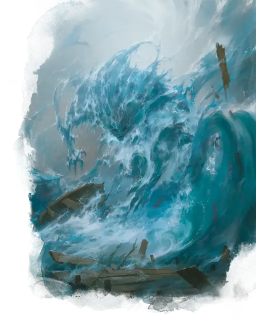

Водяной элементаль
Water Elemental
Большой Элементаль, Нейтральный

Класс Защиты 14 Инициатива +2 (12)
Хиты 114 (12к10 + 48)
Скорость 30 футов, Плавания 90 футов
| мод | спас | ||
|---|---|---|---|
| СИЛ | 18 | +4 | +4 |
| ЛОВ | 14 | +2 | +2 |
| ТЕЛ | 18 | +4 | +4 |
| мод | спас | ||
|---|---|---|---|
| ИНТ | 5 | −3 | −3 |
| МДР | 10 | +0 | +0 |
| ХАР | 8 | −1 | −1 |
Сопротивление урону Кислота, Огонь
Иммунитеты Яд; Бессознательный, Истощение, Окаменевший, Опрокинутый, Опутанный, Отравленный, Парализованный, Схваченный
Чувства Тёмное зрение 60 футов, пассивное Восприятие 10
Языки Первичный (Акван)
Опасность 5 (1 800 опыта; БВ +3)
Особенности
Заморозка. Если элементаль получает урон Холодом, его Скорость снижается на 20 футов до конца его следующего хода.
Водяное тело. Элементаль может входить в пространство другого существа и заканчивать там ход. Он может проходить через пространство шириной всего 1 дюйм, не тратя на это дополнительное перемещение.
Действия
Мультиатака. Элементаль совершает две атаки Размашистым ударом.
Размашистый удар. Бросок рукопашной атаки: +7, досягаемость 5 фт. Попадание: 13 (2к8 + 4) Дробящего урона. Если цель — существо Среднего размера или меньше, она становится Опрокинутой.
Захлёстывающие волны (Перезарядка 4–6). Спасбросок Силы: Сл 15, каждое существо в пространстве элементаля. Провал: 22 (4к8 + 4) Дробящего урона. Если цель — существо Большого размера или меньше, она становится Схваченной (Сл освобождения от захвата 14). Пока захват не окончен, цель также Опутана, получает 9 (2к8) Дробящего урона в начале каждого хода элементаля и задыхается. Элементаль может удерживать в захвате Захлёстывающими волнами одновременно одно Большое существо или вплоть до двух существ Среднего размера или меньше. Действием существо в пределах 5 футов от элементаля может совершить проверку Силы (Атлетика) Сл 14, чтобы выдернуть схваченное элементалем существо. Успех: Только половина урона.
Бонус мастерства +3
Среда обитания Болота, Прибрежье, Под водой, Стихийный план Воды
Сокровища Отсутствуют
Водный элементаль
Первозданный дух волн и приливов
Духи Стихийного плана Воды обращают бесформенную жидкость в водных элементалей — жидких существ, наделённых мощью вздымающихся волн. Водные элементали столь же изменчивы, как и сама жидкость: они всей силой обрушиваются на врагов, так и просачиваются сквозь самые узкие щели. Они способны сокрушать противников конечностями-гейзерами или накрывать существ целиком, затягивая и топя их внутри своих кружащихся тел. Водные элементали часто возникают близ средоточий стихийной силы — в подводных безднах, волшебных источниках и водоворотах.
На облик водяного элементаля влияет жидкость, из которой он состоит. Совершите бросок по таблице «Состав водного элементаля» или определите сами его особенность.
Состав водного элементаля
| к4 | Тело водяного элементаля состоит из… |
| 1 | Ледяной или почти кипящей воды. |
| 2 | Бурлящей, пенящейся воды. |
| 3 | Мутной, загрязнённой или кристально чистой воды. |
| 4 | Водорослей, крошечных рыбок и прочей морской живности. |